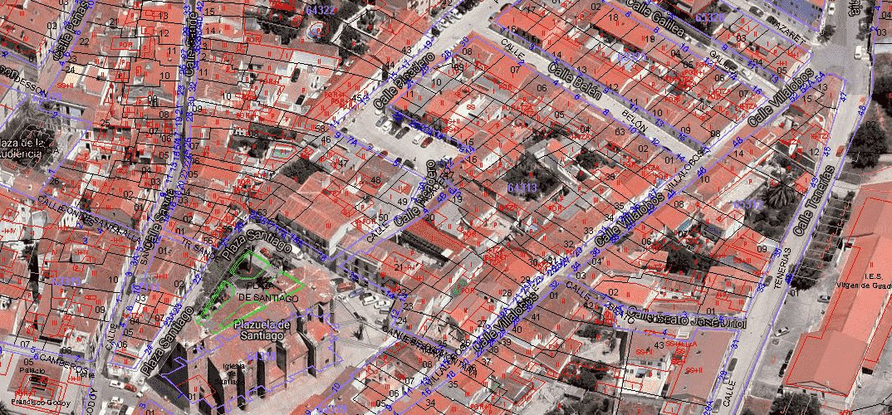
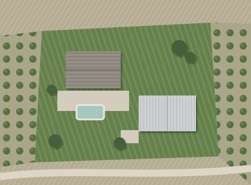
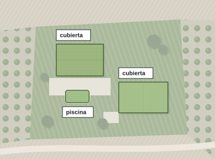
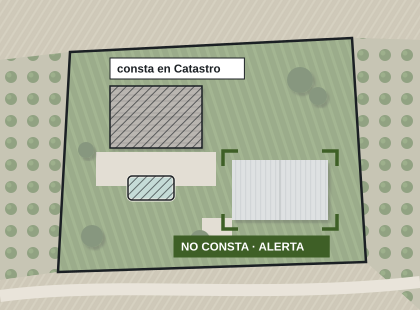
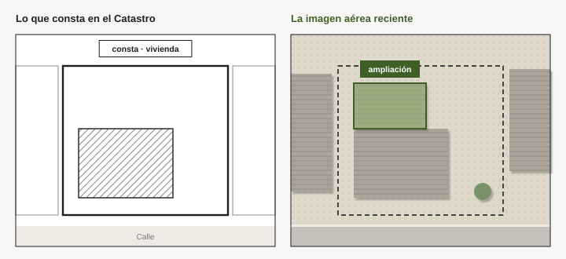
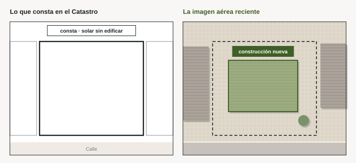
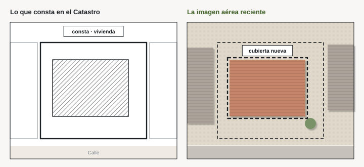
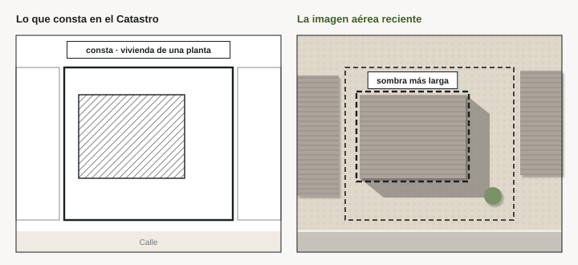

Catastro y teledetección
El Catastro de un municipio cambia cada año: se construye, se amplía, se segrega. Nuestros técnicos llevan desde 1987 ayudando a mantenerlo al día, junto con los organismos competentes. Para un ayuntamiento, un Catastro al día es la base de un padrón del IBI, la contribución, que recoge lo que de verdad hay construido.

Cómo actualizamos el Catastro de un municipio
En cada municipio empezamos con un análisis previo y terminamos con una verificación y una hoja de revisión. Entre medias van el trabajo de campo y el de gabinete.
Trabajo de campo
Recorremos el municipio con el listado de incidencias y la cartografía de parcelas. De cada inmueble fotografiamos la construcción, marcamos el punto con el número de foto y redactamos su parte del expediente. Si una obra está a medio hacer, no la damos por terminada.
Trabajo de gabinete
Cruzamos y depuramos los datos, dibujamos la cartografía y la cargamos en las bases catastrales. Cada decisión queda anotada para poder revisarla después.
La entrega
Cada municipio se entrega en una carpeta cerrada, con su hoja de control, los recuentos comprobados y una hoja de revisión con lo que quedó dudoso.
Teledetección catastral
Nuestro programa compara una imagen reciente con la cartografía del Catastro, parcela a parcela. Donde ve construido algo que no consta, o una piscina que no figura, deja una alerta con la referencia catastral.
Lo hemos desarrollado nosotros, y es una red neuronal entrenada con casos reales. Cada alerta es solo un indicio, y lo que entre finalmente en el Catastro lo decide el organismo competente.
El plano es un ejemplo dibujado. Pulse en la leyenda para encender o apagar cada capa.
- A1Parcela 412 · nave que no consta
- A2Parcela 414 · piscina que no consta
- A3Parcela 415 · posible ampliación de la vivienda
- D1Parcela 416 · descartada en la revisión: era escombro
Cómo sale una alerta
Si lo que reconoce el programa en la imagen no cuadra con lo que consta en el Catastro, y la diferencia es una construcción, la parcela sale con alerta.
1. La imagen aérea

2. Lo que reconoce el programa

3. Lo que consta en el Catastro

Qué se ve desde el aire y qué no
En una campaña de teledetección en la provincia de Cáceres salieron ampliaciones, viviendas nuevas, rehabilitaciones y segundas plantas. No todas se ven igual desde arriba.
A la izquierda, lo que consta en el Catastro; a la derecha, la imagen aérea. Son dibujos de ejemplo, no fincas reales.

Ampliación
La vivienda ha crecido y el Catastro sigue con la superficie de antes.
- El programa reconoce como construida toda la cubierta, también la parte nueva.
- Al cruzarla con lo que consta, la parte nueva queda fuera y la parcela sale con alerta.
- Antes de dar la alerta por buena hay que comprobarla, porque una sombra o un toldo pueden confundir al programa.

Vivienda nueva
Donde el Catastro tiene un solar, la imagen muestra una casa.
- Todo lo que el programa reconoce como construido queda sin explicar.
- La alerta sale como construcción en una parcela que el Catastro tiene vacía.
- Es el caso más claro, y aun así se comprueba antes de pasarlo al organismo competente.

Rehabilitación
La casa se ha reformado sin crecer.
- Desde arriba la huella no cambia, así que el programa no encuentra nada nuevo.
- A veces se nota en la imagen, por ejemplo en una cubierta nueva, pero eso no basta para saber qué obra se ha hecho.
- Para confirmarlo hay que ir al terreno, donde la foto de la construcción enseña la obra.

Segunda planta
Sobre la casa que ya constaba se ha levantado otra planta.
- La huella coincide con la que consta, y el programa no mide alturas.
- Una pista puede ser la sombra, más larga que la de las casas vecinas, pero no es una prueba.
- La planta nueva se confirma en campo, con la foto de la fachada.
El porcentaje de cada parcela
Por cada parcela, la entrega dice cuántos metros se ven construidos en la imagen, cuántos constan en el Catastro y cuántos quedan sin explicar, también en porcentaje. Son medidas orientativas, no superficies exactas.
Abajo puede probar con tres parcelas de ejemplo.
Superficie de la parcela: 2.400 m²
Qué se entrega
Por cada zona entregamos lo siguiente.
- Las alertas, una por referencia catastral, ordenadas por prioridad.
- Las capas para un programa de mapas, y una copia en CSV que se abre con Excel.
- Las imágenes de comprobación de cada parcela revisada.
- La fecha de la imagen, que es la más reciente disponible.
- Las parcelas que la imagen no cubre enteras salen como «no evaluables», no como vacías.
- Superficie
- 3.100 m²
- Se ve construido
- 520 m²
- Consta
- 240 m²
- Sin explicar
- 280 m²
Lo que el programa no hace
- No sustituye al trabajo de campo. Sirve para prepararlo y decidir por qué parcelas empezar.
- No sabe en qué año se hizo una obra ni si tiene licencia.
- No mide alturas: desde arriba, una casa de una planta y otra de dos se parecen mucho.
- A veces se equivoca. Una sombra, un toldo, un coche o un campo recién arado pueden parecerle lo que no son, y por eso lo dudoso sale marcado.
Cómo aprende y cuánto acierta lo contamos en teledetección con IA.
Padrón y licencias
Cada hogar del padrón, con su referencia catastral
- El padrón y el Catastro no siempre escriben igual la misma calle, así que emparejamos los nombres por parecido y ajustamos la numeración calle a calle.
- Cruzamos primero por finca, con los catorce primeros caracteres de la referencia, y después bajamos a cada vivienda por escalera, planta y puerta.
- Validamos cada referencia y, si no pasa, dejamos la casilla en blanco antes que rellenarla mal.
- El resultado sale coloreado según lo seguro que es cada cruce, con una hoja de control de hogares por pueblo.
Licencias que el Catastro todavía no recoge
- Cruzamos la lista de licencias del ayuntamiento con la antigüedad y las reformas que constan en el Catastro.
- Si el Catastro ya tiene una fecha igual o posterior, la licencia se descarta y se anota el motivo.
- Las demás salen con una imagen de revisión: la ortofoto, el parcelario y la incidencia rotulada.
Apoyo en gestión tributaria
Para el organismo que lleva la gestión y la recaudación, trabajamos sobre la base catastral ya depurada. Los actos los dicta siempre el organismo.
- Planes de inspección.
- Tramitación de expedientes sancionadores, con el control de sus plazos.
- Actas con su documentación gráfica y catastral.
- Liquidaciones con los datos comprobados.
Planos y cartografía catastral
- Planos de parcela con su escala, el norte arriba y cada recinto de un color. Si dos fuentes no encajan, el plano enseña el desfase.
- Cartografía adaptada al formato y la estructura que pide el Catastro.
- Ficheros KML para ver las parcelas en Google Earth, cada una con su referencia, su incidencia y el enlace a la Sede Electrónica del Catastro.
- Imágenes de revisión sobre la ortofoto del vuelo nacional, con el parcelario encima.
Antes de superponer dos capas comprobamos el sistema de referencia de cada una.
Otros trabajos catastrales
Memorias para concursos
Las redactamos y maquetamos según el pliego de cada concurso.
Listados de viviendas
Leemos los ficheros del Catastro con un programa propio y sacamos, por municipio, el listado de viviendas de urbana y de rústica.
Fotografía de fachadas
Cada foto se renombra con su referencia catastral y se comprime hasta el peso que pide el pliego, sin perder la fecha ni la posición GPS.
Preguntas frecuentes
¿Qué imagen se usa?
Una imagen de satélite reciente, de unos 25 cm por píxel. Su fecha consta en cada entrega.
¿Qué tiene que aportar el ayuntamiento?
Para empezar, poco: la cartografía catastral es pública y se descarga de la Sede Electrónica del Catastro. Lo demás se acuerda en cada encargo.
¿El programa usa datos de los propietarios?
No. Trabaja con la imagen y la cartografía; los datos de titularidad no los lee.
Cómo empezar en su municipio
Si nos dicen qué municipio es y qué les preocupa, les contaremos cómo lo plantearíamos y qué haría falta para empezar.
- emiliocontadorbrito@gmail.com
- Calle Matilde Tagle Ortiz, 28, 5.º D, 06006 Badajoz